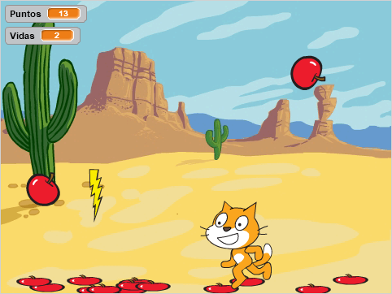
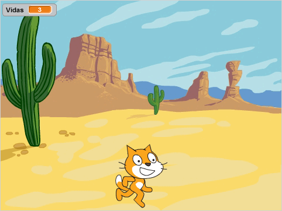
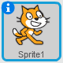
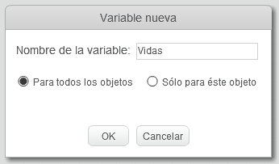
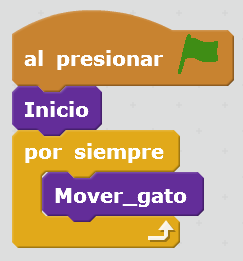
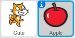
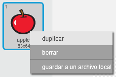
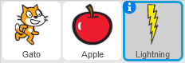
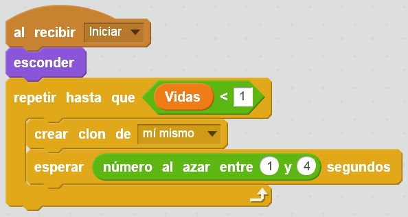

7. Catch apples¶
In this practice we are going to program a game that consists of catching apples with the cat and avoiding the rays that kill. The cat will move with the right and left keys. When the cat loses its three lives, the game will be over.
We start the Scratch editor.
We will change the background of the stage to a desert.
Click on the New Background button.

Then click on Nature Theme.
Then we select the background Desert.
The screen will be as follows.
Now we must click on the cat to carry out its program. The cat icon must be selected.

By clicking on the letter i inside the cat icon, we can change its name.

In the cat programs tab we will create a new function called Start
First click on the button more blocks

Then click on create a block

Then we change the name of the new block to Home

Finally we press the button OK
Now we will create the variable Lives.
Within the Data
 tab,
tab,press create a variable

We change the name of the variable to Lives
Finally we press the button OK
This variable will store the lives that the cat still has. When its value reaches zero, the cat will die.
Now we will write the Start block.
First click on the button more blocks
Then click on create a block
Then we change the name of the new block to Home
We place the following blocks in Start.

This program gives the cat three lives at start.
Place the cat at the bottom of the screen, with left-right rotation mode.
It also erases all images on the screen.
Finally, wait for the space key to be pressed to continue.
Now we will program a block that will move the cat left and right with the arrow keys. The new block will be called Move_cat

To finish this section, we will carry out a small program that will test everything we have programmed so far.
By pressing the green flag
 , the cat will first wait for us to press the space bar, then the cat will move left and right by pressing the left and right keys.
, the cat will first wait for us to press the space bar, then the cat will move left and right by pressing the left and right keys.
Apple program¶
Warning
From this point on, all instructions should be added to the Programs tab of the apple object.
The first thing we will do is add a new character, an apple
Press the new object button

Then click on Things Category.
Then we select the Apple object.
Now we will create a new variable called Points
Within the Data
tab,press create a variable
We change the name of the variable to Points

Finally we press the button OK
This variable will count the points that the game character accumulates.
The cat will earn one point each time it catches an apple and will lose two points if the apple falls to the ground.
Now we add a new message called Start
Click on the Events button.
and we move the block "when receiving message1" to programs.
Clicking on the arrow, we select new message...

We name the new message as Start.

Finally we press the button OK
This message will serve to warn the apples that they may start to fall after the space key is pressed.
It also clears the points to start the game and shows them on the screen.
Now we can program the necessary instructions to drop the apples when receiving the Start message.

The program hides the object so that it cannot be seen on the screen, resets the point counter to zero, and creates copies of the apple (clones of the apple) every few random times, as long as the cat has lives.
Let's create another costume that represents the apple squashed on the ground on the ground.
First we select the costumes tab of the Apple.
Next we select with the right button of the mouse on the disguise of the apple to duplicate it.
In the newly created Apple2 costume, we squash the image.

In this section we will define how apple clones behave. We will create the following programs.


The apple is placed at the top of the screen and falls little by little (change y by -10) until it touches the cat or until it falls to the ground.
If the apple touches the cat, it increases the points and disappears.
If the apple touches the ground, it will be crushed and a thump will sound.
The program has been divided into several functions to simplify each of the blocks.
Now let's check that the new instructions work. We modified the cat's program to add the message Start

At this time, the cat will be able to play apple picking. We must move the cat with the left and right arrows so that it touches the apples before they fall to the ground.
Lightning program¶
In this section we are going to program several lightning bolts to fall from above and take the lives of the cat. In this way we give the game more difficulty and emotion.
Warning
From this point on, all instructions should be added to the Programs tab of the lightning object.
The first thing we'll do is add a new character, a lightning.
Press the new object button
Then click on Things Category.
Then we select the Lightning object.
Now we are going to program the lightning strike from the top of the screen. As with the apples, lightning will strike while the cat has lives.
We are going to add a new sound to the lightning, so that the cat complains when struck by lightning.
Select the tab Sounds of lightning.
Click on selecting a new sound from the library .
In the Animal Category we select the sound meow

Now we must create a program for each lightning clone.

These programs will place each ray in a random position each time a clone is created. The ray will then fall (change y by -1) until it either hits the cat or hits the bottom edge.
If the lightning strikes the cat, it will take a life and it is erased.
If the beam hits the ground, it disappears.
We will check by pressing the green flag
that everything works fine.
Cat death¶
When the cat loses all its lives the game ends and apples and lightning stop falling, but the cat keeps moving. In this section we are going to add the necessary instructions so that the cat appears dead at the end of the game.
Warning
From this point on, all instructions should be added to the Programs tab of the cat object.

{kind=link}
{kind=link}
{kind=link}
{kind=link}
{kind=link}
Exercises¶
- Modify the program so that the number of lightning bolts increases over time, making the game increasingly difficult.